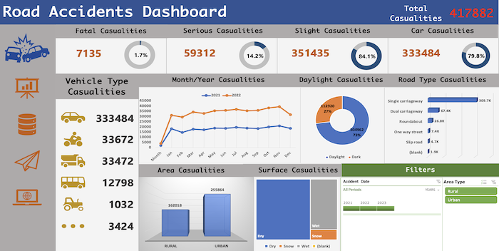

Driving Insights: UK Road Accidents Excel Analysis

Translated the raw data into actionable insights. Crafted interactive visual reports that highlight the key performance indicators crucial for informed decision-making. Through this analysis journey, I uncovered fascinating trends in classic car types and models. Additionally, I designed a performance analysis dashboard that not only evaluates individual employee sales but also celebrates their achievements, fostering a culture of excellence and success. Developed a performance analysis dashboard for individual employee sales and performance.